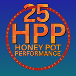

The Doctors: Exploring 1970’s Teen Social Scenes and the Emergence of Chicago House Music Culture
This exhibition documents the pre-house era influence and innovation of a 1970’s dance crew based in Chicago’s Roseland community. These young Black men from Mendel Catholic High School elevated the school’s parties to new prominence, creating significant social cultural contributions to the teen scene and party culture in Chicago. This exhibition emerges from the CBSCM’s Community Curators Program which examines the personal archives of The Doctors in collaboration with curatorial writer, DaJona Butler.
Exhibition Opening:
Friday, May 29, 2026
6-10pm @ First Church of the Brethren (425 S. Central Park Blvd)
6:00-7:00pm – The Doctors – Interview Screening + CBSCM: A Look into Archiving with Micah Smith, Archiving & Research Manager
7-8:00pm – Panel discussion with the Doctors, moderated by DaJona Butler
8:00-8:45pm – Exhibition walkthrough and curator discussion with ebere agwuncha + DaJona Butler, moderated by Meida McNeal
8:45-10:30pm – Closing DJ set with Craig Loftis & social hour